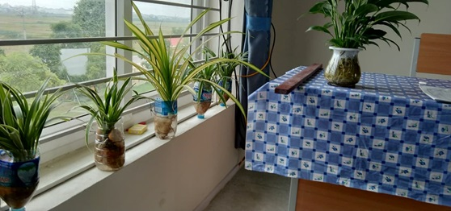

Tuổi trẻ trường THPT Đồng Đậu học tập và làm theo gương bác
Thứ Hai, 26/12/2016
Khắc ghi lời dạy của Bác “ Vì lợi ích mười năm trồng cây, vì lợi ích trăm năm trồng người, những năm qua, việc học tập và làm theo tư tưởng, đạo đức, phong cách Hồ Chí Minh của Trường THPT Đồng Đậu đã và đang có sức lan tỏa mạnh mẽ và sâu rộng, với sự hưởng ứng tích cực của tập thể giáo viên và học sinh.

Tư tưởng đạo đức Hồ Chí Minh là sự kết tinh những truyền thống tốt đẹp của dân tộc ta và tinh hoa văn hóa của nhân loại, là tài sản vô giá của Đảng và nhân dân ta, là tấm gương sáng để mọi người dân Việt Nam noi theo. Tấm gương đạo đức Hồ Chí Minh là tấm gương đạo đức của một vĩ nhân, một vị lãnh tụ cách mạng vĩ đại nhưng đồng thời cũng là tấm gương đạo đức của một người chân chính, bình thường, gần gũi, ai cũng có thể học theo, làm theo để trở thành một người công dân tốt trong xã hội.
Khắc ghi lời dạy của Bác “ Vì lợi ích mười năm trồng cây, vì lợi ích trăm năm trồng người, những năm qua, việc học tập và làm theo tư tưởng, đạo đức, phong cách Hồ Chí Minh của Trường THPT Đồng Đậu đã và đang có sức lan tỏa mạnh mẽ và sâu rộng, với sự hưởng ứng tích cực của tập thể giáo viên và học sinh. Qua đó, xuất hiện nhiều tập thể, cá nhân tích cực, tiêu biểu trong học tập và làm theo Bác với những việc làm thiết thực, hiệu quả.
Đến với trường THPT Đồng Đậu, ấn tượng đầu tiên có lẽ là cảnh quan sân trường xanh – sạch – đẹp với các loại cây xanh, bồn hoa được quy hoạch hợp lí. Đó không chỉ là công lao chăm sóc của các thế hệ học sinh mà còn là ý tưởng sáng tạo của toàn thể cán bộ, giáo viên và nhân viên trong trường.

Cán bộ, giáo viên trường THPT Đồng Đậu chăm sóc bồn hoa
Thầy cô giáo trong trường luôn là tấm gương sáng, không chỉ trong phong trào lao động, học tập mà còn là động lực cho các em được phát huy khả năng sáng tạo của mình. Điển hình là lóp 10a9, mặc dù mới bước chân vào ngôi trường không lâu nhưng dưới sự hướng dẫn, chỉ đạo của cô giáo chủ nhiệm Nguyễn Thị Thu Trang, các em đã có rất nhiều ý tưởng sáng tạo trong chính môi trường học tập của mình và các phong trào thi đua của trường, của lớp.
Không gian học tập sáng tạo của lớp 10a9, trường THPT Đồng Đậu
Không chỉ trong phong trào học tập, mà ngay cả trong các phong trào văn hóa, văn nghệ của trường, các em cũng luôn tham gia tích cực và có những ý tưởng mới mẻ, sáng tạo phát huy khả năng, thế mạnh của từng đoàn viên và đẩy mạnh phong trào đoàn kết của tập thể học sinh trong trường. Qua đó, góp phần nâng cao ý thức tự giác chấp hành nội quy, quy định, sống có trách nhiệm, biết chia sẻ, có ý chí vươn lên trong học tập.
Hội thi làm bánh chào mừng ngày 20 – 10 của các chi đoàn trường THPT Đồng Đậu
Để đẩy mạnh phong trào học tập và làm theo tấm gương đạo đức Hồ Chí Minh, nhà trường đã tạo điều kiện, khuyến khích cán bộ, giáo viên và học sinh luôn tìm tòi và sáng tạo trong học tập, lao động gắn với phong trào thi đua “xây dựng trường học thân thiện, học sinh tích cực”, “mỗi thầy cô giáo là một tấm gương tự học và sáng tạo”. Đặc biệt, trong năm học vừa qua, bên cạnh việc đẩy mạnh phong trào học tập, nhà trường đã rất chú trọng đến môi trường học tập của học sinh thông qua các hoạt động và các phong trào thi đua, tổ chức các cuộc thi như “ thầy cô sống mãi trong lòng em”, “Rung chuông vàng”, “xổ số học tập” , tổ chức hội nghị đối thoại trực tiếp giữa Ban giám hiệu, BTV Đoàn trường với Đoàn viên thanh niên trong trường… Thông qua đó học sinh được phát huy khả năng của mình và nhà trường nắm bắt được tâm tư, nguyện vọng của các em để điều chỉnh công tác quản lí, điều hành nhằm phát huy mặt tích cực và khắc phục những hạn chế nhằm nâng cao chất lượng giảng dạy và giáo dục học sinh.
Thời gian tới, để việc học tập và làm theo tấm gương đạo đức Hồ Chí Minh có sức lan tỏa, nhà trường tiếp tục thực hiện gắn việc học tập với các phong trào thi đua xây dựng môi trường giáo dục lành mạnh. Từ những việc làm thiết thực sẽ là nguồn động viên, khích lệ cho các em có suy nghĩ đúng, có tình cảm đẹp, trong sáng, sống vì cộng đồng và góp phần làm sáng thêm tư tưởng, đạo đức Bác Hồ kính yêu.